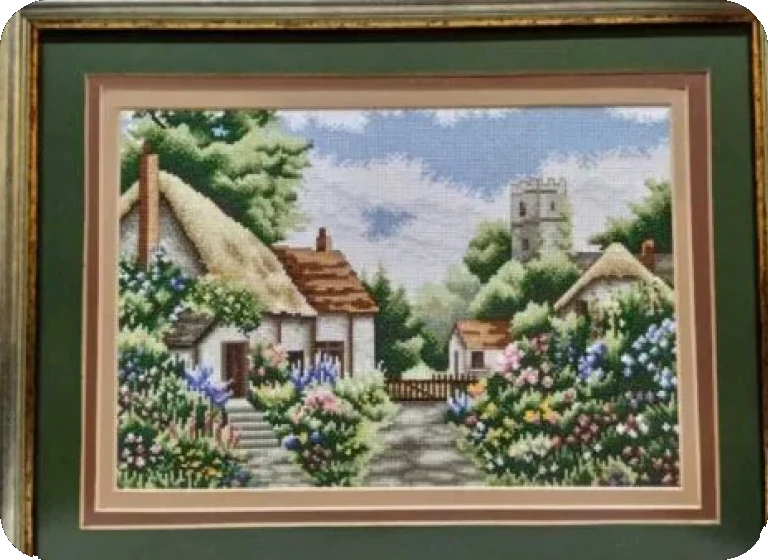
Hecho a mano
Cuadro decorativo
Una pieza artesanal para darle vida a tus espacios
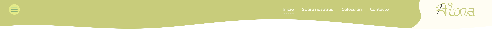
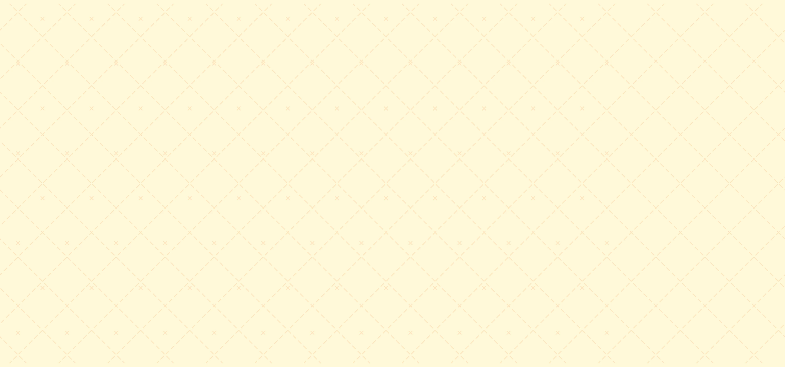
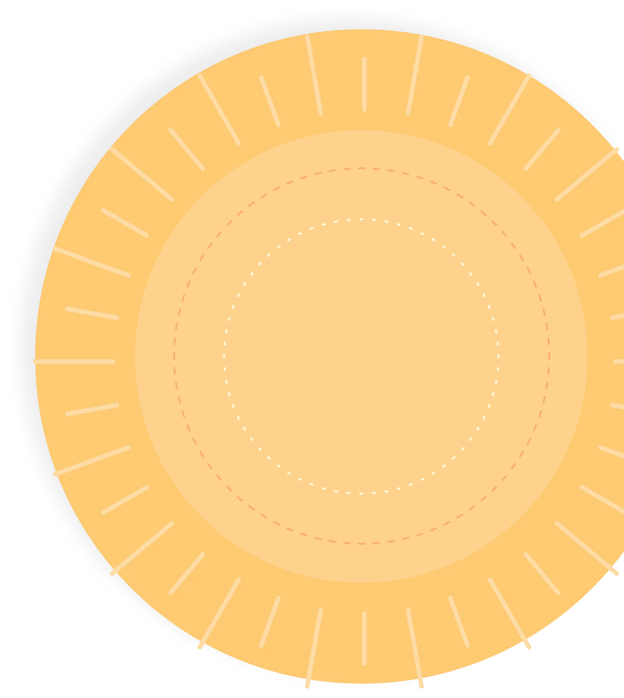
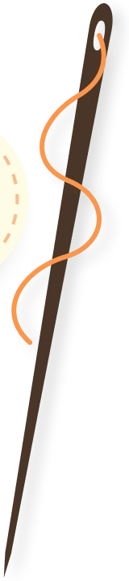
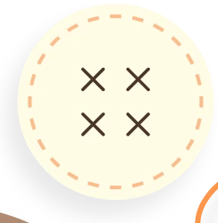
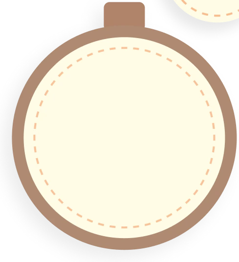
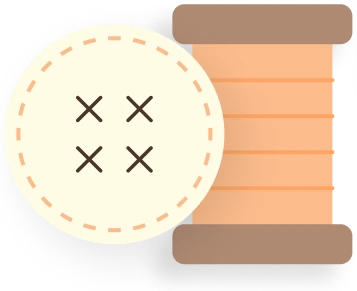
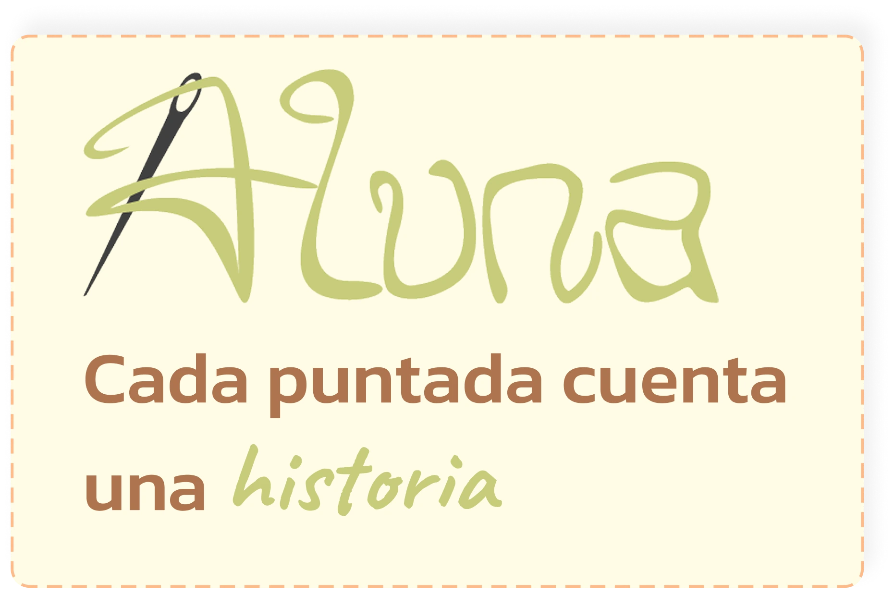
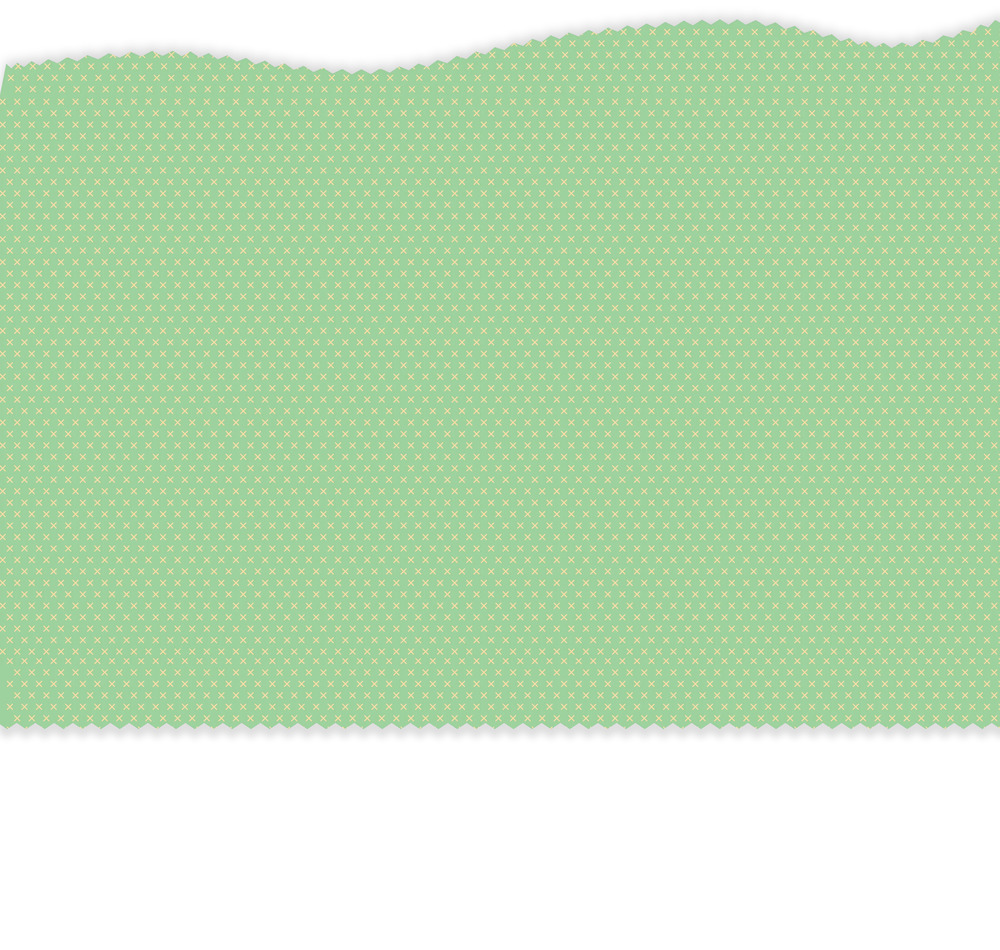
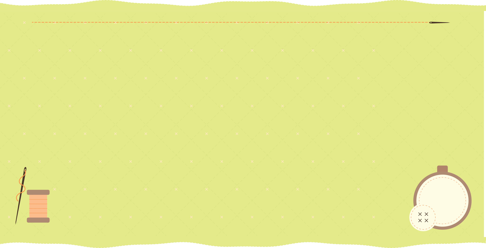
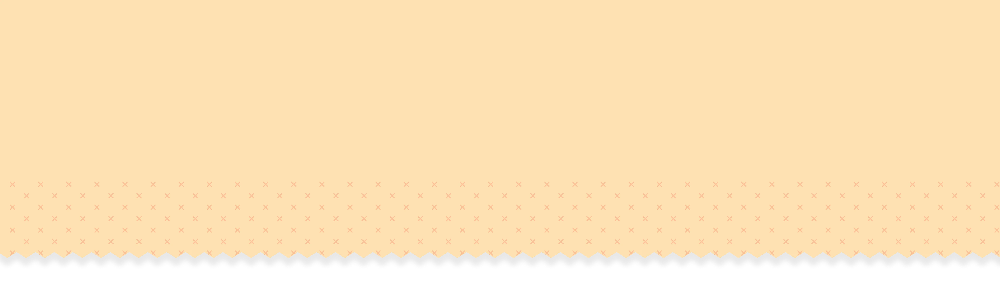
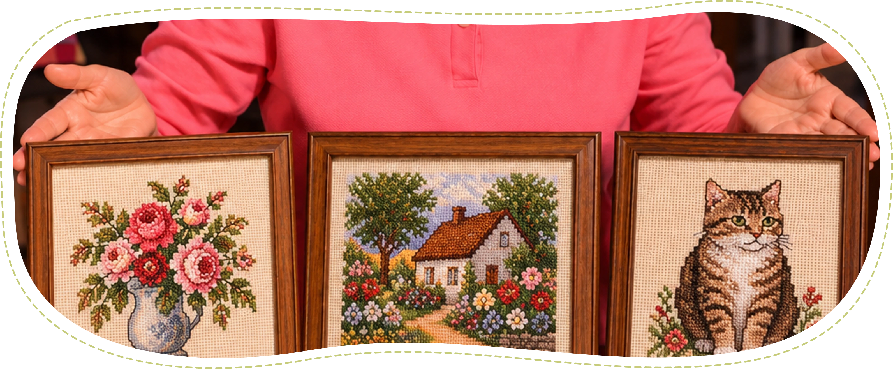
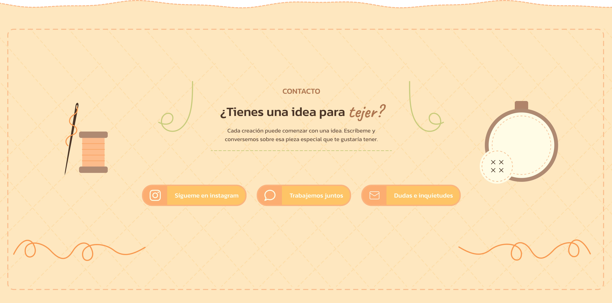
CONTACTO
Cada creación puede comenzar con una idea. Escríbeme y conversemos sobre esa pieza especial que te gustaría tener.